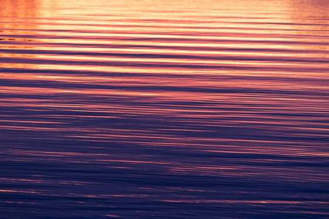
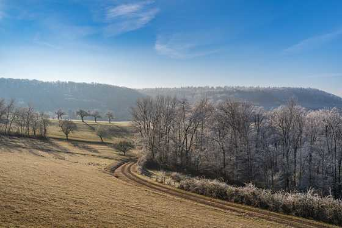
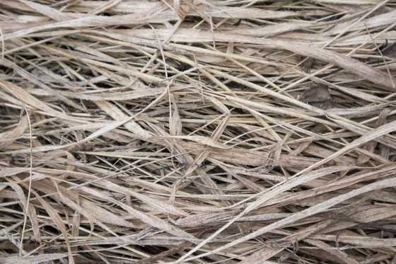
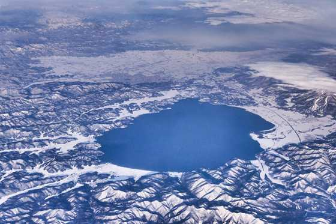

ABOUTお店について

おんだ整体・整骨院は、栃木県佐野市栄町にある整体・整骨院です。接骨・整骨、マッサージ、整体を扱う院として紹介されています。
佐野市工業団地の道路沿いに位置し、無料の駐車場(7台)があるため、お車での来院に向いた立地です。交通事故のご相談や各種保険の取り扱いについて、Instagramで案内されています。
店名の意味や開業の経緯、院長の想いは、公開情報からは確認できていません。ご本人へのヒアリング後に追記します。
制作側のイメージ:毎日の暮らしの近くにあって、肩の力を抜いて通える静かな場所、として配色と写真を選びました。


